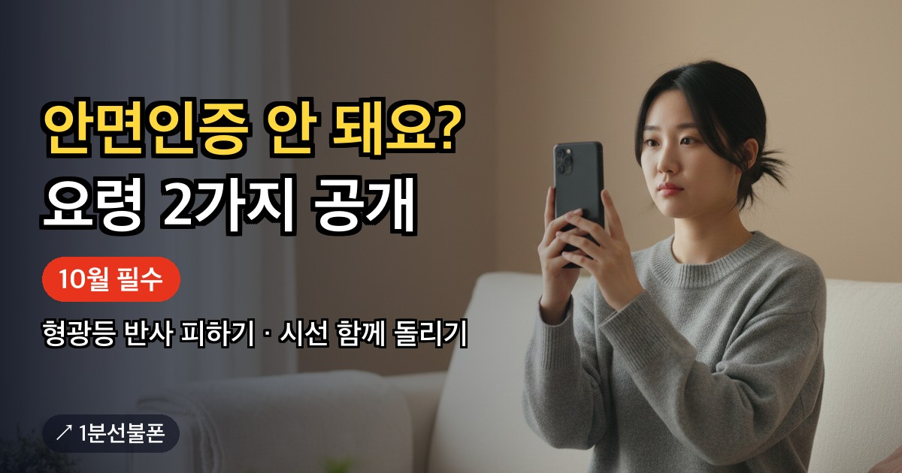

'선불 유심 개통 사이트'를 검색하면 비교 글과 안내 페이지, 실제 신청 화면이 한데 섞여 나옵니다. 정보를 보는 곳과 개통을 접수하는 곳은 서로 다르고, 민감한 정보는 그중 한 곳에만 넣어야 합니다. 1분선불폰 역시 안내를 맡는 사이트라는 점을 먼저 밝히고, 정식 신청 화면을 알아보는 방법을 정리합니다.
- 안내 사이트는 비교·준비까지, 신청·인증·개통은 앤텔레콤 신청 페이지에서
- 정식 신청 화면은 주소창의 n-telecom.co.kr로 확인, KT·LG U+ 홈페이지가 아님
- 신분증 사진·주민등록번호·인증번호는 채팅이나 안내 사이트로 보내지 않기
- 안내 사이트에서 고른 요금제는 신청서에 자동 반영되지 않아 다시 선택
- 미납·연체여도 온라인 신청 가능, 단 본인 명의 간편인증서 필요
안내 사이트와 신청 페이지는 하는 일이 다릅니다
선불폰 사이트라고 해서 모두 개통을 접수하는 곳은 아닙니다. 역할로 나누면 크게 두 종류입니다.
| 구분 | 하는 일 | 민감정보 |
|---|---|---|
| 안내 사이트(1분선불폰) | 요금제 비교, 망별 유심 준비, 온라인·방문 신청 차이 안내 | 신분증 사진·주민등록번호·인증번호를 받지 않음 |
| 앤텔레콤 신청 페이지 | 신청 자격·본인인증, 유심 정보·요금제 선택, 신청 접수와 처리 결과 | 본인인증과 신청에 필요한 항목을 화면 안내에 따라 입력 |
1분선불폰은 선불폰 선택과 준비를 돕는 정보 안내 브랜드이고 별도의 통신사가 아닙니다. 이곳에서 신청서를 쓰거나 개통을 처리하지 않으며, 실제 신청은 사이트의 신청 페이지·온라인 개통 버튼을 눌러 이동한 앤텔레콤 화면에서 이뤄집니다.
정식 신청 화면은 주소창으로 확인합니다
신청 버튼을 누르면 새 창이 열립니다. 이때 가장 먼저 주소창에 n-telecom.co.kr이 보이는지 확인하세요. 1분선불폰의 신청 버튼은 이 주소의 앤텔레콤 신청 페이지로 연결됩니다.
KT나 LG U+ 홈페이지에서 앤텔레콤 선불폰을 신청하는 것도 아닙니다. 앤텔레콤이 두 회사의 망을 쓰긴 해도 망만 빌려 운영하는 별도 사업자라서, 가입 창구도 따로입니다. 'KT 선불 유심 사이트'처럼 망 이름으로 검색해 들어왔더라도, 앤텔레콤 선불폰 신청은 앤텔레콤 화면에서 진행됩니다.
이런 요청을 받으면 일단 멈추세요
선불폰을 알아보다 보면 채팅이나 메시지로 서류부터 보내 달라는 곳을 만날 수 있습니다. 아래 정보는 정식 신청 화면이 아닌 곳에는 보내지 마세요.
- 신분증 사진
- 주민등록번호
- 휴대폰으로 받은 인증번호
1분선불폰은 이 세 가지를 받지 않으니, 카카오톡 상담 창에도 올리지 마세요. 온라인 신청의 본인 확인은 앤텔레콤 신청 화면 안의 안면인증과 간편인증서 본인인증으로 이뤄집니다. 다른 경로에서 같은 정보를 요구한다면 진행을 멈추고 지금 보고 있는 주소부터 다시 확인하는 것이 순서입니다.
신청 페이지 안에서는 이렇게 진행됩니다
정식 화면에 들어왔다면 흐름은 단순합니다. 가입 유형을 고르고, 안면인증과 토스·카카오 등 간편인증서로 본인인증을 하고, 유심 정보와 요금제를 넣은 다음 개통하기를 누르는 순서입니다.
2026년 10월부터는 안면인증을 반드시 통과해야 개통할 수 있습니다. 촬영할 때는 형광등이 얼굴에 비쳐 반사가 생기는 자리를 피하고, 고개를 돌리는 순간 눈길도 고개를 따라 옮겨야 인식이 매끄럽습니다. 개통이 끝나면 본사 확인 전화(해피콜)가 걸려 오는데, 놓친 채 지나가면 번호가 해지될 수 있으니 꼭 받으세요. 단계별 준비물과 주의점은 선불폰 셀프개통 글에 자세히 풀어 두었습니다.
신청 직전에 한 번 더 볼 것
안내 사이트에서 요금제를 미리 정해 두어도 신청서 칸이 저절로 채워지지는 않습니다. 신청 화면에서 요금제를 한 번 더 직접 골라야 하니, 생각해 둔 요금제의 이름과 월 요금이 화면과 같은지 맞춰 보세요. 12,100원부터 시작하는 낮은 요금제를 고를 때도 마찬가지입니다.
요금제 구성, 유심 재고와 가격, 신청 가능 시간, 가입 조건은 바뀔 수 있습니다. 안내 글에 적힌 내용보다 신청 직전 앤텔레콤 화면에 표시된 조건이 기준입니다. 미리 비교해 두고 싶다면 선불폰 요금제 보기와 망별 유심 준비를 먼저 훑어본 뒤 신청 화면으로 넘어가면 됩니다.
온라인 신청이 어렵다면 센터로
본인 명의 간편인증서가 없으면 신청 사이트에서 비대면 개통을 진행할 수 없습니다. 이럴 때는 가까운 센터를 센터 찾기로 고른 다음, 카카오톡 예약을 거쳐 실물 신분증을 갖고 찾아가면 됩니다.
미납·연체·신용불량 이력이 있어도 온라인이든 방문이든 신청할 수 있습니다. 대한민국에 거주하는 본인 명의라면 신용조회 없이 개통할 수 있고, 가입비도 붙지 않습니다. 어느 사이트를 거치든 마지막에 확인할 것은 하나, 지금 입력하는 화면이 정식 신청 페이지인가입니다.
자주 묻는 질문
KT나 LG U+ 홈페이지에서 선불폰을 신청하나요?
아닙니다. 앤텔레콤은 KT·LG U+ 망을 이용하지만 별개의 통신사라서, 신청은 주소창에 n-telecom.co.kr이 보이는 앤텔레콤 신청 페이지에서 합니다.
1분선불폰 사이트에서 신청서를 작성하나요?
아닙니다. 1분선불폰은 요금제와 유심 준비를 안내하는 사이트이고, 신청·본인인증·개통은 신청 페이지 버튼으로 이동한 앤텔레콤 화면에서 진행합니다.
카카오톡 상담에 신분증 사진을 보내도 되나요?
보내지 마세요. 1분선불폰은 신분증 사진·주민등록번호·인증번호를 받지 않고, 온라인 본인 확인은 정식 신청 화면 안에서만 진행됩니다.
선불폰 개통 사이트에서 가입비를 따로 내나요?
가입비는 없습니다. 비용은 유심 값(편의점 기준 6,600~8,800원)과 12,100원부터 시작하는 요금제 요금으로 생각하면 됩니다.
미납이 있어도 온라인으로 신청할 수 있나요?
가능합니다. 신용조회를 하지 않는 선불폰이라 밀린 요금이 있어도 온라인으로 신청할 수 있습니다. 대신 온라인 경로를 쓰려면 내 이름으로 된 간편인증서가 준비돼 있어야 합니다.
같이 보면 좋은 글

선불폰 방문 개통 — 어디로, 무엇을 들고, 어떤 순서로 가나
온라인 인증이 막혔거나 직접 얼굴을 보고 개통하고 싶다면 방문 개통이 길입니다. 그런데 집 앞 KT·LG…
선불폰 개통 조건 — 자격은 하나, 방법은 간편인증서 유무로 갈립니다
선불폰 개통 조건은 딱 하나, 대한민국에 거주하고 있다는 것뿐입니다. 미납·연체·신용불량 이력이 있어도 이…

선불폰 셀프개통 — 신청 페이지에서 개통하기까지 단계별 정리
선불폰 셀프개통은 매장 직원의 도움 없이 내가 직접 앤텔레콤 신청 페이지에서 회선을 여는 방식입니다…

개통 안면인증, 2026년 10월부터 반드시 통과해야 개통됩니다
신청 화면에서 개통 안면인증을 몇 번씩 다시 시도하다 지친 분들이 많습니다. 안면인증은 통신비 미납 여부를…